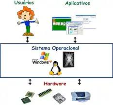

O que é um software?
Software é uma sequência de instruções escritas para serem interpretadas por um computador para executar tarefas específicas. Também pode ser definido como os programas, dados e instruções que comandam o funcionamento de um computador, smartphone, tablet e outros dispositivos eletrônicos. O software é o responsável por fazer a máquina compreender e executar os comandos do usuário. É classificado como a parte lógica e imaterial, cuja função é fornecer instruções para o hardware. O hardware é toda a parte física que constitui o dispositivo.
O que é um sistema operacional??
Um sistema operacional (SO) é o software que gerencia os recursos de hardware de um dispositivo, como processador, memória e periféricos. Ele fornece uma interface para a execução de outros aplicativos, facilitando a interação do usuário com a máquina. Existem diferentes tipos de sistemas operacionais, como desktop, móveis, servidores, embarcados e tempo real. Alguns exemplos populares são o Windows, macOS e Linux para computadores pessoais, enquanto o Android e o iOS são líderes em dispositivos móveis.
O que é uma licença de software?

Uma licença de software, ou licença de programa de computador, é uma definição de ações autorizadas (ou proibidas), no âmbito do direito de um programador de software de computador concedidas (ou impostas) ao usuário deste software. Entende-se por usuário qualquer entidade legal, empresas ou um "usuário final (doméstico)", de onde tem origem o termo em inglês end user license agreement (EULA).
O que é um Software Licenciado?
O licenciamento de software é uma autorização que o desenvolvedor de um determinado software concede para que empresas utilizem a plataforma e todas suas funcionalidades com segurança. No momento em que a empresa contrata um serviço digital com o devido licenciamento, ganha o direito legal de usar o software.
O que é Software livre?
Software livre é o software que concede liberdade ao usuário para executar, acessar e modificar o código fonte, e redistribuir cópias com ou sem modificações. Sua definição é estabelecida pela Free Software Foundation em conjunto com o projeto GNU.[1][2][3] Segundo a definição, criada por Richard Stallman, fundador da FSF, software livre é qualquer programa de computador que pode ser usado, copiado, estudado, modificado e redistribuído sem nenhuma restrição.[4] É permitido vender software livre, entretanto as mesmas liberdades são válidas para o comprador.
O que é um Software Proprietário?

Software proprietário, também conhecido como software de código fechado, refere-se ao software que pertence a um indivíduo ou empresa e está sujeito a acordos de licenciamento que restringem seu uso, modificação e distribuição. Diferente de código aberto software, o código-fonte do software proprietário não é disponibilizado ao público. Isso significa que os usuários não podem visualizar, modificar ou compartilhar o código subjacente.
O que é software de Sistema?
Software de sistema ou programa de sistema é o software projetado para fornecer uma plataforma para outro software.[1] Exemplos de software de sistema incluem sistemas operacionais como macOS, Ubuntu (uma distribuição Linux) e Microsoft Windows, software de computação científica, mecanismos de jogos, automação industrial e aplicativos de software como serviço.[2] Em contraste com o software de sistema, softwares que permitem aos usuários realizar tarefas orientadas ao usuário, como criar documentos de texto, jogar jogos de computador, ouvir música ou navegar na Web, são coletivamente chamados de software aplicativo.
O que é um software de Programação ?

Os softwares de programação (ou ferramentas de programação, como também são conhecidos) são essenciais para qualquer desenvolvedor, pois permitem escrever, editar, testar e depurar códigos-fonte de diferentes linguagens de programação.
O que é um software de diagnóstico software ?
O diagnóstico de software é um processo técnico que visa identificar e analisar problemas em sistemas e aplicativos. Esse procedimento é fundamental para garantir que o software funcione de maneira eficiente e atenda às necessidades dos usuários. Durante o diagnóstico, são utilizadas diversas ferramentas e técnicas que permitem a coleta de dados sobre o desempenho do software, ajudando a detectar falhas e inconsistências que podem afetar sua operação.
O que é um software de diagnóstico de hardware ?
O diagnóstico de hardware refere-se ao processo de identificação e análise de problemas relacionados aos componentes físicos de um computador ou dispositivo eletrônico. Este procedimento é crucial para determinar a origem de falhas, como lentidão, travamentos ou até mesmo a incapacidade de ligar o equipamento. O diagnóstico pode ser realizado por meio de ferramentas específicas, testes manuais e a observação de comportamentos anômalos do sistema.